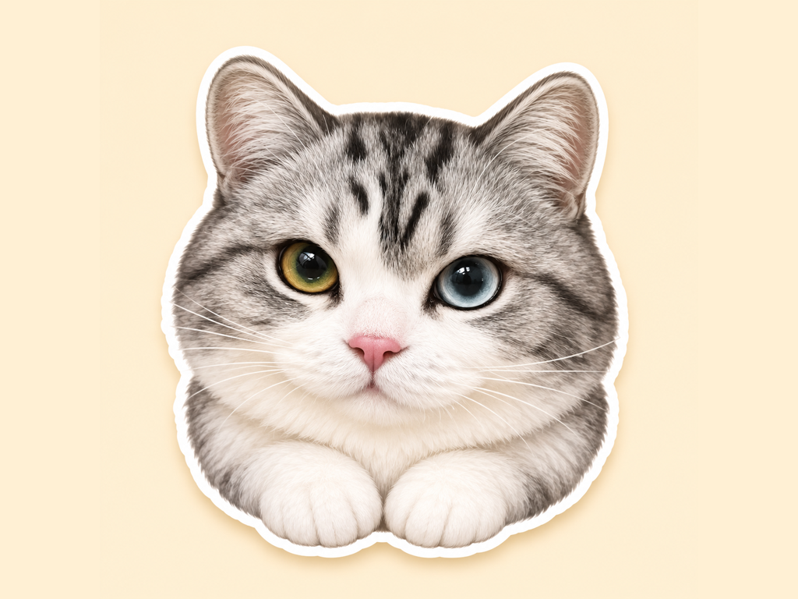

小爪贴纸
Xiaozhua Stickers
把小猫的表情贴进聊天
49 张小猫贴纸
43 张静态贴纸，6 张动态贴纸。全部包含，没有广告、订阅或内购。
如何使用
- 在「信息」App 中打开聊天。
- 轻点「＋」，选择「贴纸」。
- 选择 Xiaozhua Stickers，轻点贴纸，或将贴纸拖到消息气泡上。
需要 iOS 或 iPadOS 17 或更新版本。贴纸包没有单独的主屏幕入口。
联系开发者
如需反馈问题，请邮件联系 bobs_note_app@outlook.com。请注明 Xiaozhua Stickers、系统版本和遇到的问题。
请勿在反馈中提供密码、验证码或私人聊天内容。
Support
Xiaozhua Stickers includes 49 cat stickers, including 6 animated stickers. All stickers are included, with no ads, subscriptions, or in-app purchases.
Open Messages, enter a conversation, tap +, choose Stickers, and select Xiaozhua Stickers. Tap a sticker or drag it onto a message bubble. The pack requires iOS or iPadOS 17 or later and has no separate Home Screen app.
For help, email bobs_note_app@outlook.com with the app name, your OS version, and a description of the issue.